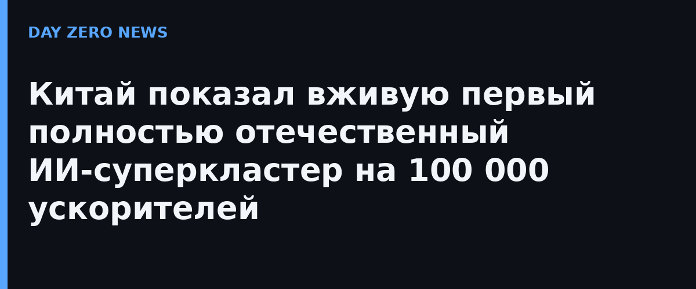

На национальном академическом конгрессе по высокопроизводительным вычислениям CCF HPC, который проходит в Шэньчжэне, впервые публично представили «в железе» первый в Китае полностью отечественный ИИ-суперкластер на 100 000 ускорителей — Sugon 8000 (внутреннее название «Дэнфэн», «Вершина»). Одновременно компания Sugon (Zhongke Shuguang) объявила о десяти флагманских прикладных результатах, полученных на машине: от моделирования материалов до имитации космических объектов.
Sugon 8000 построен на идее «нативного слияния» двух типов вычислений: в одной системе соседствуют классические научные расчёты высокой точности (вплоть до двойной точности FP64) и обучение/инференс больших моделей (до целочисленных форматов вроде INT8). По данным IT之家 со ссылкой на CCTV, пиковая производительность кластера сопоставима с 200 годами непрерывных вычислений всего человечества, а мощности хватит, чтобы смоделировать «цифровой двойник мозга» или развить эволюцию моделируемой вселенной на десять миллиардов световых лет вперёд.
Кластер был официально «введён в строй» 10 июля 2026 года и подключён к государственной суперкомпьютерной интернет-сети; в августе сообщалось о полном вводе в эксплуатацию. К настоящему моменту на машине глубоко оптимизировано более 300 приложений более чем в двух десятках направлений — новые материалы, разработка лекарств, искусственный интеллект. Важная деталь: весь кластер собран на отечественных компонентах — на фоне американских экспортных ограничений Китай сознательно идёт по пути независимого «железа» для ИИ.
Гонка масштаба ИИ-инфраструктуры в мире идёт вокруг планок в десятки и сотни тысяч ускорителей: сопоставимые по размеру кластеры строят американские гиперскейлеры и xAI. Китайский случай интересен не столько размером, сколько ставкой на полную технологическую автономию и на совмещение научной суперкомпьютерной школы с обучением больших моделей в одной машине. Насколько эта ставка окупится, станет ясно по открытым результатам бенчмарков и реальным нагрузкам.